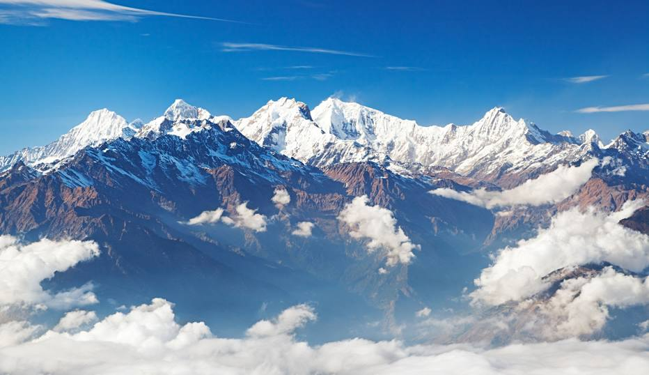
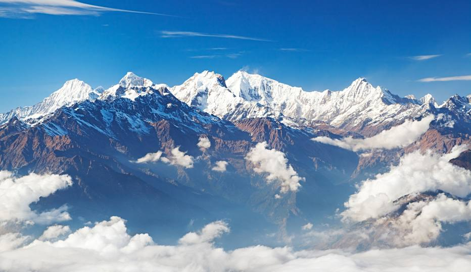
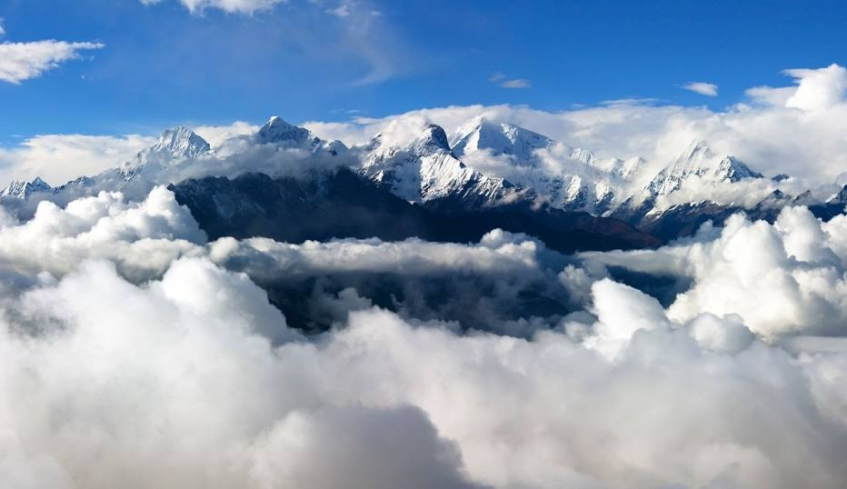
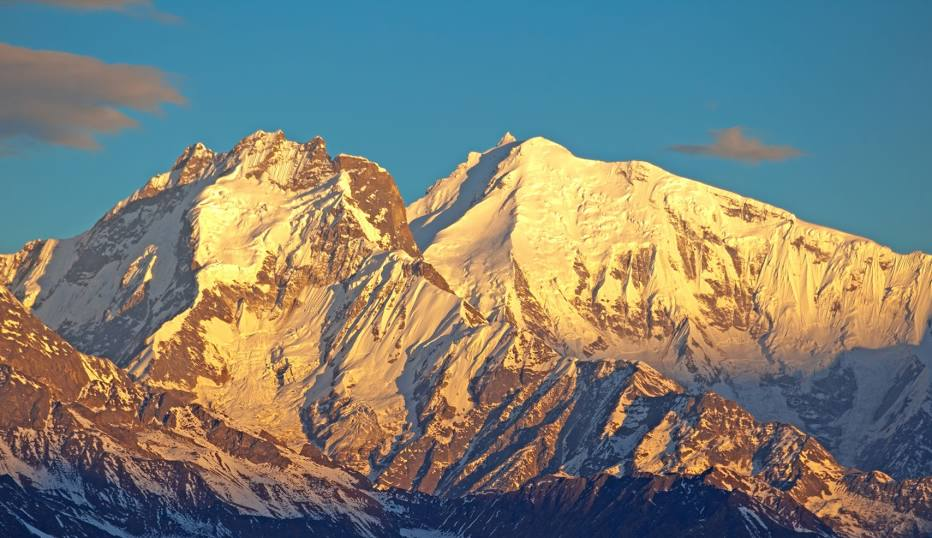

The highest peak in the range is Yangra with an elevation of 7,422 m (24,350 ft). Three other peaks are over 7,000 m (23,000 ft) and fourteen others over 6,000 m (20,000 ft)


Ganesh Himāl is a sub-range of the Himalayas located mostly in north-central Nepal, but
some peaks lie on the border with Tibet. The Trisuli Gandaki valley on the east
separates it from the Langtang Himal; the Budhi (Buri) Gandaki valley and the Shyar
Khola valley on the west separate it from the Sringi Himal and the Mansiri Himal
(home of Manaslu, the nearest 8000m peak).[2]
The highest peak in the range is Yangra with an elevation of 7,422 m (24,350 ft). Three other peaks are over 7,000 m (23,000 ft) and fourteen others over 6,000 m (20,000 ft)

Ganesh Himal Singla Pass Trek in the Ganesh Himal region is an adventure package designed by Destination Himalaya Treks and Expedition to offer uniquely untouched area trekking. Adventurous and quiet trekking in the Ganesh Himal region can be experienced while trekking to Singla Pass from the beginning of the trip. Singla Pass Trekking in the Ganesh Himal region can be performed by a healthy, independent, and physically fit individual.
 